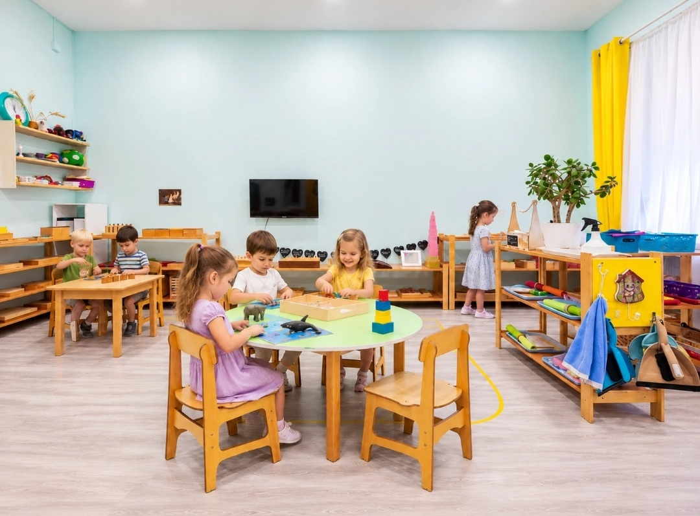
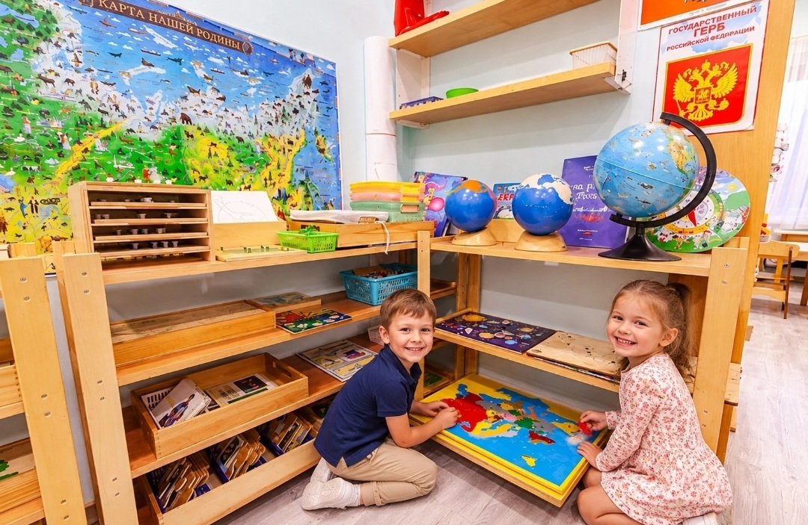
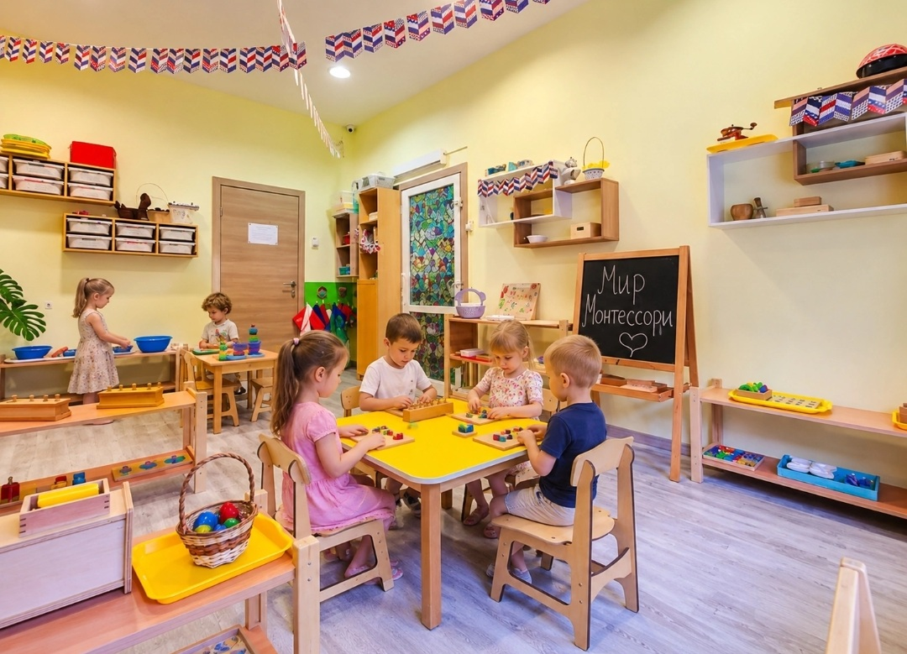
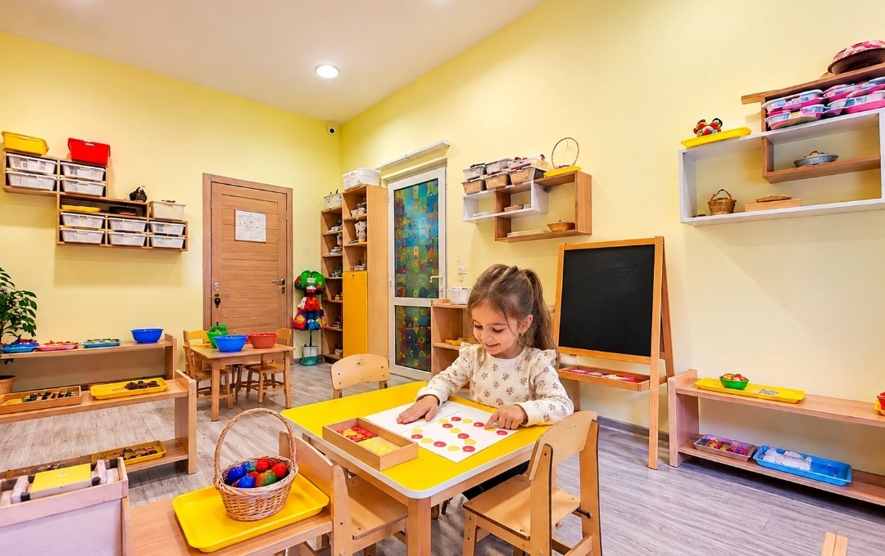
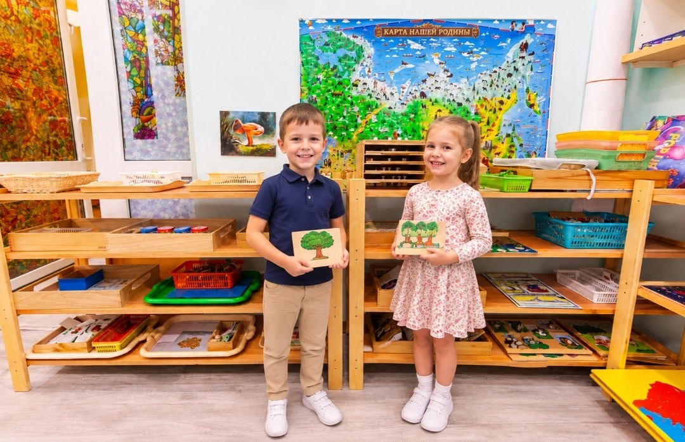

Фотогалерея
Пространство для самостоятельных открытий
Светлая среда, доступные ребёнку материалы и взрослые, которые умеют быть рядом без лишней спешки.





Светлая среда, доступные ребёнку материалы и взрослые, которые умеют быть рядом без лишней спешки.




